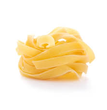

Cardápio
Pratos do Dia (Almoço)
SEGUNDA-FEIRA
- Sopa: Canja com Cenoura e
Massinha1,5€
- Filet de Peixe Panado, Arroz e
Legumes
Salteados5,9€
- Macarrão ao Molho de Queijo com
Cogumelos e
Frango5,9€
TERÇA-FEIRA
- Sopa: Caldo de Peixe com Tomates e
Massinha1,5€
- Carne de Porco Alentejana com
Batatas, Picles e
Amêijoas5,9€
- Macarrão à Bolonhesa com Queijo
Parmesão5,9€
QUARTA-FEIRA
- Sopa: Caldinho de Feijão com
Feijões Verdes (Veg)
1,5€
- Perninhas de Frango ao Forno,
Arroz, Batatas Fritas e
Salada5,9€
- Massa Linguini Negra à
Mariscada5,9€
QUINTA-FEIRA
- Sopa: Creme de Cenouras com
Espinafres (Veg)1,5€
- Bacalhau à Brás5,9€
- Macarrão à Stracciatella (Mussarela
Fresca com Natas),
com molho de tomates, massa de pimentos e parmesão fundido (Veg)5,9€
SEXTA-FEIRA
- Sopa: Creme de Ervilhas (Veg)1,5€
- Feijoada Brasileira com Arroz,
Vinagrete, Torresmo,
Couve, Farinha de Mandioca e Fatia de Laranja6,9€
- Macarrão à Pietro (Salsicha fresca
picante, cebolas, e
molho de tomate) com queijo Parmesão6,9€
SÁBADOS E FERIADOS
- Lasanha à Bolonhesa com Massa
Fresca, Molho à
Bolonhesa, Molho Bechamel e queijo gratinado9,9€
TODOS OS DIAS
- Bife de Frango6,9€
- Bifanas6,9€
- Bife de Vitela8,9€
- Filet de Peixe Panado7,9€
- Strogonoff de Frango7,9€
- Parmegiana de Frango8,9€
Escolha 2 Acompanhamentos: Arroz, Batata Frita, Batata Palha, Salada, Legumes
(Acompanhamento Extra em qualquer prato - 0,5€)
Observações:
1- Take Away - Alumínio 0,35€ | Cx Papel 0,20€ | Embal. Sopa peq
0,25€ / gr 0,35€.
2- Os valores aplicados nesta ementa já estão com os devidos IVAs incluídos.
3- Nenhum produto destes pode ser cobrado se não for solicitado (art. 135 10/2015).
Entradas
- Salgados1,3€
- Rissóis de Carne, Rissóis de Camarão, Empadas de Frango, Coxinhas de Frango, Bolas de Queijo
(Veg)
- Pequeno Antepasto (Veg) / Com Creme
Queijo da Serra + 0,8€ (Veg)
Pão(4 fatias), manteiga e azeitonas
1,5€
- Salada Simples (Veg) / Com Atum +2€
Alface,
Tomates e Cebolas2,5€
Lasanhas
- Lasanha à Bolonhesa
Massa
fresca, molho à
Bolonhesa, molho Bechamel e queijo gratinado11,5€
- Lasanha de Bacalhau
Massa
fresca, bacalhau
salteado com cebolas, salsas e azeite, molho Bechamel e queijo
gratinado11,5€
- Lasanha de Berinjela (Veg)
Fatias de
berinjela
grelhadas, molho de tomates com azeitonas e cebolas, camadas de queijo parmesão
e queijo
gratinado11,5€
Risotos
- Limão e Alho Francês (Veg) / Com Camarões +3€
Com
manteiga e queijo parmesão. Cítrico, aromático e crocante7,9€
- Cogumelos(Veg) / Com Frango +2€
Com
manteiga e
queijo parmesão8,7€
- Frango com Tomates
Com manteiga
e queijo
parmesão8,7€
- Camarões com Tomates
Com
manteiga e queijo
parmesão11,7€
- Mariscos ao Limão
Camarões,
miolo de
amêijoas, mini lulas e mexilhões, sumo de limão, manteiga e queijo
parmesão10,7€
- Polvo Crocante
Cubos de polvo ao
vinho tinto
finalizado com tentáculos de polvo crocantes, manteiga e queijo
parmesão13,7€
Pastas
Escolha uma Pasta:
Seca: Macarrão Penne
 Fresca/Caseira:
Fresca/Caseira: Tagliatelle
(+1€) 
- À Pomodori (Veg) / Com Camarões
+3€
Molho de
tomate, manjericão, tomates em pedaços6,9€
- Cacio e Pepe (Veg)
Pimentas pretas
tostadas e
creme de queijo parmesão6,9€
- Ao Limone (Veg) / Com Camarões
+3€
Molho de
queijo, suco e raspas de limão, muito perfumado6,9€
- À Stracciatella (Veg) / Com Frango +2€ / Com
Camarões
+3€
Molho de tomate, massa de pimentos e queijo parmesão fundido,
servido com stracciatella
(mozzarella fresca enriquecida com natas)7,9€
- À Pietro (Salsicha Fresca
Picante)
Salsicha
fresca picante em pedaços com cebola e molho de tomate8,7€
- À Bolonhesa
Carne de vitela
picada ao molho
de tomate8,7€
- Cogumelos ao Queijo (Veg) / Com Frango +2€ / Com
Camarões +3€
Cogumelos frescos salteados no azeite e molho de
queijo8,7€
- Frango ao Queijo
Tirinhas de
frango
alouradas e molho de queijo8,7€
- A Putanesca
Anchovas derretidas
no molho de
tomates com azeite, pimenta calabresa, tomates em pedaços e azeitonas
pretas8,7€
- À Melanzane (Veg)
Berinjela grelhada em
pedaços ao
molho de tomates8,7€
- Ao Pesto de Manjericão (Veg)
Creme de manjericão
com azeite, castanhas de caju e queijo parmesão8,7€
- A Carbonara
Bacons fritos ao
creme de gemas
de ovos e queijo parmesão9,3€
- À Matriciana
Bacons fritos,
molho de tomate
com queijo parmesão9,3€
- Ao Mare
Pasta Linguini Negra com
camarões
grandes e pequenos, miolo de amêijoas, mini lulas e mexilhões salteados na
manteiga com alho, sumo e
raspas de limão11,9€
Bebidas
- Água sem gás 330ml0,7€
- Água sem gás 1000ml1,7€
- Água Pedras 250ml1,2€
- Água Pedras com Sabores 250ml1,5€
- Refrigerantes/Sumol lata 330ml1,5€
- Compal Sabores 200ml1,5€
- Ice Tea Sabores 330ml1,5€
- Mini Super Bock / Sagres 200ml1€
- Heineken 250ml ou Corona 210ml1,5€
- Franciscana 500ml3,5€
- Somersby 200ml1,5€
Drinks
- Aperol Spritz
Licor Italiano de
Laranja,
vinho branco frizante e água gasosa. Refrescante, levemente adocicado e um toque
de amargor de
laranja4,5€
- Limoncello (Digestivo) Shot
Um
shot de Licor
Italiano de Limão retirado da arca frigorífica na hora de servir3€
- Caipirinha de Limão
Cachaça
Brasileira,
açúcar, limão e muito gelo.4,5€
Nossos Vinhos
- Branco Maduro: Favaios
- Branco Frisante:Faisão
- Tintos: Mestre Silva (Douro)
- Dom Manuel (Pinhel)
- Cruzeiro (Poço do Canto)
Taça pequena 0,7€ - Taça Grande 1,4€ - Jarro 500ml 2,8€
Nosso Horário
Segunda à Sexta das 9h às 18:30h / Sábado das 11:30h às 14:30h
Domingo Encerrado
Telefone: 960 033 554
Menu
Daily Dishes (Lunch)
MONDAY
- Soup: Chicken Soup with Carrot and
Pasta1,5€
- Breaded Fish Fillet, Rice and
Sautéed Vegetables5,9€
- Pasta with Cheese Sauce, Mushrooms
and Chicken5,9€
TUESDAY
- Soup: Fish Broth with Tomatoes and
Pasta1,5€
- Alentejo Pork with Potatoes,
Pickles and Clams5,9€
- Pasta Bolognese with Parmesan
Cheese5,9€
WEDNESDAY
- Soup: Bean Broth with Green
Beans (Veg)
1,5€
- Baked Chicken Drumsticks, Rice,
French Fries and Salad5,9€
- Black Linguini Pasta with
Seafood5,9€
THURSDAY
- Soup: Carrot Cream with
Spinach (Veg)1,5€
- Codfish à Brás5,9€
- Pasta à Stracciatella (Fresh Mozzarella
with Cream), with tomato sauce, pepper paste and melted parmesan
(Veg)5,9€
FRIDAY
- Soup: Pea Cream (Veg)
1,5€
- Brazilian Feijoada with Rice,
Vinaigrette, Pork Crackling, Kale, Cassava Flour and Orange Slice6,9€
- Pasta à Pietro (Spicy fresh
sausage, onions, and tomato sauce) with Parmesan cheese6,9€
SATURDAYS AND HOLIDAYS
- Lasagna Bolognese with Fresh Pasta,
Bolognese Sauce, Bechamel Sauce and gratinated cheese9,9€
EVERY DAY
- Chicken Steak6,9€
- Pork Steaks6,9€
- Veal Steak8,9€
- Breaded Fish Fillet7,9€
- Chicken Stroganoff7,9€
- Chicken Parmigiana8,9€
Choose 2 Side Dishes: Rice, French Fries, Potato Sticks, Salad, Vegetables
(Extra Side Dish on any plate - 0,5€)
Notes:
1- Take Away - Aluminum 0,35€ | Paper Box 0,20€ | Small Soup Pack
0,25€ / Large 0,35€
2- The prices applied in this menu already include the respective VAT
Starters
- Savory Snacks1,3€
- Meat Rissoles, Shrimp Rissoles, Chicken Pies, Chicken Coxinhas, Cheese Balls (Veg)
- Small Appetizer (Veg) / With Serra Cheese
Cream + 0,8€ (Veg)
Bread (4 slices), butter and olives
1,5€
- Simple Salad (Veg) / With Tuna
+2€
Lettuce, Tomatoes and Onions2,5€
Lasagnas
- Lasagna Bolognese
Fresh pasta,
Bolognese sauce, Bechamel sauce and gratinated cheese11,5€
- Codfish Lasagna
Fresh pasta,
codfish sautéed with onions, parsley and olive oil, Bechamel sauce and
gratinated cheese11,5€
- Eggplant Lasagna
Grilled
eggplant slices, tomato sauce with olives and onions, layers of parmesan cheese
and gratinated cheese (Veg)11,5€
Risottos
- Lemon and Leek (Veg) / With Shrimp +3€
With
butter and parmesan cheese. Citric, aromatic and crunchy7,9€
- Mushrooms(Veg) / With Chicken
+2€
With butter and parmesan cheese8,7€
- Chicken with Tomatoes
With
butter and parmesan cheese8,7€
- Shrimp with Tomatoes
With butter
and parmesan cheese11,7€
- Seafood with Lemon
Shrimp, clam
meat, mini squid and mussels, lemon juice, butter and parmesan
cheese10,7€
- Crispy Octopus
Octopus cubes in
red wine finished with crispy octopus tentacles, butter and parmesan
cheese13,7€
Pastas
Choose a Pasta:
Dry: Penne Pasta
Fresh/Homemade: Tagliatelle
(+1€)
- Pomodori (Veg) / With Shrimp
+3€
Tomato sauce, basil, tomato pieces6,9€
- Cacio e Pepe (Veg)
Toasted black pepper
and parmesan cheese cream6,9€
- Limone (Veg) / With Shrimp
+3€
Cheese sauce, lemon juice and zest, very fragrant6,9€
- Stracciatella (Veg) / With Chicken +2€ / With
Shrimp +3€
Tomato sauce, pepper paste and melted parmesan cheese,
served with stracciatella (fresh mozzarella enriched with cream)7,9€
- Pietro (Spicy Fresh
Sausage)
Spicy fresh sausage pieces with onion and tomato
sauce8,7€
- Bolognese
Minced veal in tomato
sauce8,7€
- Mushrooms with Cheese (Veg) / With Chicken +2€ / With
Shrimp +3€
Fresh mushrooms sautéed in olive oil and cheese
sauce8,7€
- Chicken with Cheese
Golden
chicken strips and cheese sauce8,7€
- Puttanesca
Anchovies melted in
tomato sauce with olive oil, Calabrian pepper, tomato pieces and black
olives8,7€
- Melanzane (Veg)
Grilled eggplant
pieces in tomato sauce8,7€
- Basil Pesto (Veg)
Basil cream with olive
oil, cashews and parmesan cheese8,7€
- Carbonara
Fried bacon with egg
yolk cream and parmesan cheese9,3€
- Matriciana
Fried bacon, tomato
sauce with parmesan cheese9,3€
- Mare
Black Linguini Pasta with
large and small shrimp, clam meat, mini squid and mussels sautéed in butter with
garlic, lemon juice and zest11,9€
Beverages
- Still water 330ml0,7€
- Still water 1000ml1,7€
- Sparkling water 250ml1,2€
- Flavored sparkling water 250ml1,5€
- Soft drinks/Sumol can 330ml1,5€
- Compal Flavors 200ml1,5€
- Ice Tea Flavors 330ml1,5€
- Mini Super Bock / Sagres 200ml1€
- Heineken 250ml or Corona 210ml1,5€
- Franciscana 500ml3,5€
- Somersby 200ml1,5€
Drinks
- Aperol Spritz
Italian Orange
Liqueur, sparkling white wine and sparkling water. Refreshing, slightly sweet
with a touch of orange bitterness4,5€
- Limoncello (Digestive) Shot
A
shot of Italian Lemon Liqueur taken from the freezer at serving time3€
- Lime Caipirinha
Brazilian
Cachaça, sugar, lime and lots of ice.4,5€
Our Wines
- Mature White: Favelos
- Sparkling White: Faisão
- Reds: Mestre Silva
(Douro)
- Dom Manuel (Pinhel)
- Cruzeiro (Poço do Canto)
Small glass 0,7€ - Large glass 1,4€ - Pitcher 500ml 2,8€
Our Schedule
Monday to Friday from 9am to 6:30pm / Saturday from 11:30am to 2:30pm
Sunday Closed
Phone: 960 033 554
Menú
Platos del Día (Almuerzo)
LUNES
- Sopa: Caldo de Pollo con Zanahoria
y Pasta1,5€
- Filete de Pescado Empanado, Arroz y
Verduras Salteadas5,9€
- Pasta con Salsa de Queso,
Champiñones y Pollo5,9€
MARTES
- Sopa: Caldo de Pescado con Tomates
y Pasta1,5€
- Cerdo Alentejano con Patatas,
Encurtidos y Almejas5,9€
- Pasta Boloñesa con Queso
Parmesano5,9€
MIÉRCOLES
- Sopa: Caldo de Frijoles con Judías
Verdes (Veg)1,5€
- Muslos de Pollo al Horno, Arroz,
Patatas Fritas y Ensalada5,9€
- Pasta Linguini Negra con
Mariscos5,9€
JUEVES
- Sopa: Crema de Zanahorias con
Espinacas (Veg)1,5€
- Bacalao à Brás5,9€
- Pasta à Stracciatella (Mozzarella
Fresca con Nata), con salsa de tomate, pasta de pimientos y
parmesano fundido (Veg)5,9€
VIERNES
- Sopa: Crema de
Guisantes (Veg)1,5€
- Feijoada Brasileña con Arroz,
Vinagreta, Chicharrón, Col, Harina de Mandioca y Rodaja de Naranja6,9€
- Pasta à Pietro (Salchicha fresca
picante, cebollas y salsa de tomate) con queso Parmesano6,9€
SÁBADOS Y FESTIVOS
- Lasaña Boloñesa con Pasta Fresca,
Salsa Boloñesa, Salsa Bechamel y queso gratinado9,9€
TODOS LOS DÍAS
- Filete de Pollo6,9€
- Filetes de Cerdo6,9€
- Filete de Ternera8,9€
- Filete de Pescado
Empanado7,9€
- Stroganoff de Pollo7,9€
- Parmigiana de Pollo8,9€
Elija 2 Acompañamientos: Arroz, Patatas Fritas, Patatas Paja, Ensalada, Verduras
(Acompañamiento Extra en cualquier plato - 0,5€)
Observaciones:
1- Para Llevar - Aluminio 0,35€ | Caja Papel 0,20€ | Envase Sopa peq
0,25€ / gr 0,35€
2- Los precios aplicados en este menú ya incluyen el IVA correspondiente
Entrantes
- Aperitivos Salados1,3€
- Croquetas de Carne, Croquetas de Camarón, Empanadas de Pollo, Coxinhas de Pollo, Bolas de
Queso (Veg)
- Pequeño Aperitivo (Veg) / Con Crema de
Queso de Serra + 0,8€ (Veg)
Pan(4 rebanadas), mantequilla y aceitunas
1,5€
- Ensalada Simple (Veg) / Con Atún
+2€
Lechuga, Tomates y Cebolas2,5€
Lasañas
- Lasaña Boloñesa
Pasta fresca,
salsa boloñesa, salsa bechamel y queso gratinado11,5€
- Lasaña de Bacalao
Pasta fresca,
bacalao salteado con cebollas, perejil y aceite de oliva, salsa bechamel y queso
gratinado11,5€
- Lasaña de Berenjena
Rodajas de
berenjena a la parrilla, salsa de tomate con aceitunas y cebollas, capas de
queso parmesano y queso gratinado (Veg)11,5€
Risottos
- Limón y Puerro (Veg) / Con Camarones
+3€
Con mantequilla y queso parmesano. Cítrico, aromático y
crujiente7,9€
- Champiñones(Veg) / Con Pollo +2€
Con
mantequilla y queso parmesanox8,7€
- Pollo con Tomates
Con
mantequilla y queso parmesano8,7€
- Camarones con Tomates
Con
mantequilla y queso parmesano11,7€
- Mariscos al Limón
Camarones,
carne de almejas, mini calamares y mejillones, jugo de limón, mantequilla y
queso parmesano10,7€
- Pulpo Crujiente
Cubos de pulpo
al vino tinto terminado con tentáculos de pulpo crujientes, mantequilla y queso
parmesano13,7€
Pastas
Elija una Pasta:
Seca: Pasta Penne
Fresca/Casera: Tagliatelle
(+1€)
- Pomodori (Veg) / Con Camarones
+3€
Salsa de tomate, albahaca, trozos de tomate6,9€
- Cacio e Pepe (Veg)
Pimienta negra tostada
y crema de queso parmesano6,9€
- Limone (Veg) / Con Camarones
+3€
Salsa de queso, jugo y ralladura de limón, muy
perfumado6,9€
- Stracciatella (Veg) / Con Pollo +2€ / Con
Camarones +3€
Salsa de tomate, pasta de pimientos y queso
parmesano fundido, servido con stracciatella (mozzarella fresca enriquecida con
nata)7,9€
- Pietro (Salchicha Fresca
Picante)
Trozos de salchicha fresca picante con cebolla y salsa
de tomate8,7€
- Boloñesa
Carne de ternera picada
en salsa de tomate8,7€
- Champiñones al Queso (Veg) / Con Pollo +2€ / Con
Camarones +3€
Champiñones frescos salteados en aceite de oliva y
salsa de queso8,7€
- Pollo al Queso
Tiras de pollo
doradas y salsa de queso8,7€
- Puttanesca
Anchoas derretidas en
salsa de tomate con aceite de oliva, pimienta calabresa, trozos de tomate y
aceitunas negras8,7€
- Melanzane (Veg)
Trozos de berenjena a
la parrilla en salsa de tomate8,7€
- Pesto de Albahaca (Veg)
Crema de albahaca con
aceite de oliva, anacardos y queso parmesano8,7€
- Carbonara
Tocino frito con crema
de yemas de huevo y queso parmesano9,3€
- Matriciana
Tocino frito, salsa
de tomate con queso parmesano9,3€
- Mare
Pasta Linguini Negra con
camarones grandes y pequeños, carne de almejas, mini calamares y mejillones
salteados en mantequilla con ajo, jugo y ralladura de limón11,9€
Bebidas
- Agua sin gas 330ml0,7€
- Agua sin gas 1000ml1,7€
- Agua con gas 250ml1,2€
- Agua con gas con sabores 250ml1,5€
- Refrescos/Sumol lata 330ml1,5€
- Compal Sabores 200ml1,5€
- Ice Tea Sabores 330ml1,5€
- Mini Super Bock / Sagres 200ml1€
- Heineken 250ml o Corona 210ml1,5€
- Franciscana 500ml3,5€
- Somersby 200ml1,5€
Cócteles
- Aperol Spritz
Licor Italiano de
Naranja, vino blanco espumoso y agua con gas. Refrescante, ligeramente dulce con
un toque de amargura de naranja4,5€
- Limoncello (Digestivo) Shot
Un
shot de Licor Italiano de Limón sacado del congelador en el momento de
servir3€
- Caipirinha de Lima
Cachaça
Brasileña, azúcar, lima y mucho hielo.4,5€
Nuestros Vinos
- Blanco Maduro: Favelos
- Blanco Espumoso: Faisão
- Tintos: Mestre Silva (Douro)
- Dom Manuel (Pinhel)
- Cruzeiro (Poço do Canto)
Copa pequeña 0,7€ - Copa grande 1,4€ - Jarra 500ml 2,8€
Nuestro Horario
Lunes a Viernes de 9h a 18:30h / Sábado de 11:30h a 14:30h
Domingo Cerrado
Teléfono: 960 033 554
Menu
Plats du Jour (Déjeuner)
LUNDI
- Soupe: Bouillon de Poulet aux
Carottes et Pâtes1,5€
- Filet de Poisson Pané, Riz et
Légumes Sautés5,9€
- Pâtes à la Sauce Fromage,
Champignons et Poulet5,9€
MARDI
- Soupe: Bouillon de Poisson aux
Tomates et Pâtes1,5€
- Porc Alentejano aux Pommes de
Terre, Cornichons et Palourdes5,9€
- Pâtes Bolognaise au Fromage
Parmesan5,9€
MERCREDI
- Soupe: Bouillon de Haricots aux
Haricots Verts (Veg)1,5€
- Cuisses de Poulet au Four, Riz,
Frites et Salade5,9€
- Pâtes Linguini Noires aux Fruits de
Mer5,9€
JEUDI
- Soupe: Crème de Carottes aux
Épinards (Veg)1,5€
- Morue à Brás5,9€
- Pâtes à la Stracciatella (Mozzarella
Fraîche à la Crème), avec sauce tomate, pâte de poivrons et parmesan
fondu (Veg)5,9€
VENDREDI
- Soupe: Crème de Petits
Pois (Veg)1,5€
- Feijoada Brésilienne avec Riz,
Vinaigrette, Lard Grillé, Chou, Farine de Manioc et Tranche d'Orange6,9€
- Pâtes à Pietro (Saucisse fraîche
épicée, oignons et sauce tomate) au fromage Parmesan6,9€
SAMEDIS ET JOURS FÉRIÉS
- Lasagne Bolognaise aux Pâtes
Fraîches, Sauce Bolognaise, Sauce Béchamel et fromage gratiné9,9€
TOUS LES JOURS
- Escalope de Poulet6,9€
- Escalopes de Porc6,9€
- Escalope de Veau8,9€
- Filet de Poisson Pané7,9€
- Stroganoff de Poulet7,9€
- Parmigiana de Poulet8,9€
Choisissez 2 Accompagnements: Riz, Frites, Pommes Paille, Salade, Légumes
(Accompagnement Supplémentaire sur n'importe quel plat - 0,5€)
Observations:
1- À Emporter - Aluminium 0,35€ | Boîte Papel 0,20€ | Emballage Soupe petit
0,25€ / grand 0,35€
2- Les prix appliqués dans ce menu incluent déjà la TVA correspondante
Entrées
- Amuse-bouches Salés1,3€
- Rissoles de Viande, Rissoles de Crevettes, Chaussons au Poulet, Coxinhas de Poulet,
Boulettes de Fromage (Veg)
- Petit Apéritif (Veg) / Avec Crème de
Fromage de Serra + 0,8€ (Veg)
Pain (4 tranches), beurre et olives
1,5€
- Salade Simple (Veg) / Avec Thon
+2€
Laitue, Tomates et Oignons2,5€
Lasagnes
- Lasagne Bolognaise
Pâtes
fraîches, sauce bolognaise, sauce béchamel et fromage gratiné11,5€
- Lasagne de Morue
Pâtes fraîches,
morue sautée aux oignons, persil et huile d'olive, sauce béchamel et fromage
gratiné11,5€
- Lasagne d'Aubergine
Tranches
d'aubergine grillées, sauce tomate aux olives et oignons, couches de fromage
parmesan et fromage gratiné (Veg)11,5€
Risottos
- Citron et Poireau (Veg) / Avec Crevettes
+3€
Avec beurre et fromage parmesan. Citrique, aromatique et
croquant7,9€
- Champignons(Veg) / Avec Poulet +2€
Avec
beurre et fromage parmesan8,7€
- Poulet aux Tomates
Avec beurre
et fromage parmesan8,7€
- Crevettes aux Tomates
Avec
beurre et fromage parmesan11,7€
- Fruits de Mer au
Citron
Crevettes, chair de palourdes, mini calmars et moules, jus
de citron, beurre et fromage parmesan10,7€
- Poulpe Croustillant
Cubes de
poulpe au vin rouge fini avec tentacules de poulpe croustillants, beurre et
fromage parmesan13,7€
Pâtes
Choisissez une Pâte:
Sèche: Pâtes Penne
Fraîche/Maison: Tagliatelle
(+1€)
- Pomodori (Veg) / Avec Crevettes
+3€
Sauce tomate, basilic, morceaux de tomate6,9€
- Cacio e Pepe (Veg)
Poivre noir grillé et
crème de fromage parmesan6,9€
- Limone (Veg) / Avec Crevettes
+3€
Sauce fromage, jus et zeste de citron, très
parfumé6,9€
- Stracciatella (Veg) / Avec Poulet +2€ / Avec
Crevettes +3€
Sauce tomate, pâte de poivrons et fromage parmesan
fondu, servi avec stracciatella (mozzarella fraîche enrichie à la
crème)7,9€
- Pietro (Saucisse Fraîche
Épicée)
Morceaux de saucisse fraîche épicée avec oignon et sauce
tomate8,7€
- Bolognaise
Viande de veau hachée
à la sauce tomate8,7€
- Champignons au Fromage (Veg) / Avec Poulet +2€ / Avec
Crevettes +3€
Champignons frais sautés à l'huile d'olive et sauce
fromage8,7€
- Poulet au Fromage
Lamelles de
poulet dorées et sauce fromage8,7€
- Puttanesca
Anchois fondus dans
la sauce tomate avec huile d'olive, piment calabrais, morceaux de tomate et
olives noires8,7€
- Melanzane (Veg)
Morceaux d'aubergine
grillée à la sauce tomate8,7€
- Pesto de Basilic (Veg)
Crème de basilic avec
huile d'olive, noix de cajou et fromage parmesan8,7€
- Carbonara
Lard frit à la crème
de jaunes d'œufs et fromage parmesan9,3€
- Matriciana
Lard frit, sauce
tomate au fromage parmesan9,3€
- Mare
Pâtes Linguini Noires avec
grosses et petites crevettes, chair de palourdes, mini calmars et moules sautés
au beurre avec ail, jus et zeste de citron11,9€
Boissons
- Eau plate 330ml0,7€
- Eau plate 1000ml1,7€
- Eau gazeuse 250ml1,2€
- Eau gazeuse aromatisée 250ml1,5€
- Sodas/Sumol canette 330ml1,5€
- Compal Saveurs 200ml1,5€
- Ice Tea Saveurs 330ml1,5€
- Mini Super Bock / Sagres 200ml1€
- Heineken 250ml ou Corona 210ml1,5€
- Franciscana 500ml3,5€
- Somersby 200ml1,5€
Cocktails
- Aperol Spritz
Liqueur Italienne
d'Orange, vin blanc pétillant et eau gazeuse. Rafraîchissant, légèrement sucré
avec une pointe d'amertume d'orange4,5€
- Limoncello (Digestif) Shot
Un
shot de Liqueur Italienne de Citron sorti du congélateur au moment de
servir3€
- Caipirinha de Citron
Vert
Cachaça Brésilienne, sucre, citron vert et beaucoup de
glace.4,5€
Nos Vins
- Blanc Mature: Favelos
- Blanc Pétillant: Faisão
- Rouges: Mestre Silva (Douro)
- Dom Manuel (Pinhel)
- Cruzeiro (Poço do Canto)
Petit verre 0,7€ - Grand verre 1,4€ - Pichet 500ml 2,8€
Nos Horaires
Lundi au Vendredi de 9h à 18h30 / Samedi de 11h30 à 14h30
Dimanche Fermé
Téléphone: 960 033 554